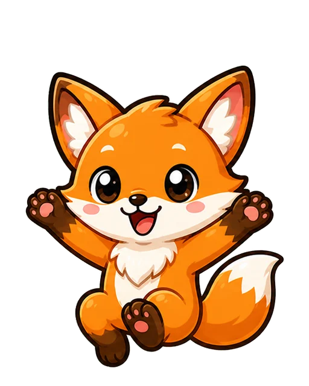
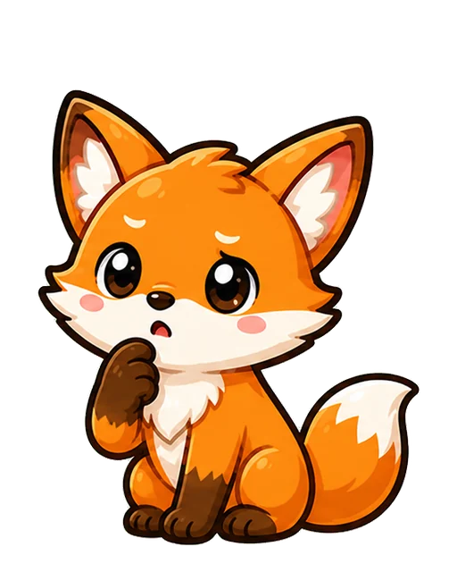

첫 화면 시작 버튼 · mathmon-cover-start-button-v1
2단원 4차시는 이미 이 원본을 직접 참조합니다. 1단원에 남은 차시별 버튼 4개는 더 만들지 않고 이 버튼으로 통일합니다.

3-2학년 1·2단원 자산 점검
학생이 매 차시에서 같은 뜻으로 만나는 버튼과 이미지는 공용으로 고정합니다. 반대로 수업 내용과 보상을 설명하는 그림은 각 차시의 이야기로 남깁니다.
여기에서 고르는 것은 새 이미지 생성이 아닙니다. 이미 만든 자산 중 하나를 공용 원본으로 정하는 일입니다. 선택을 마치면 공용 폴더·파일명·표시 크기·각 차시 참조를 한 묶음으로 정리합니다.
2단원에서 먼저 적용해 둔 공용 기준입니다. 1단원도 같은 참조로 이관하면 됩니다.
mathmon-cover-start-button-v12단원 4차시는 이미 이 원본을 직접 참조합니다. 1단원에 남은 차시별 버튼 4개는 더 만들지 않고 이 버튼으로 통일합니다.
result-correct-0…100/10부터 10/10까지는 모두 같은 공용 생성 이미지 세트입니다. 1·2단원 8개 차시가 이미 같은 경로를 씁니다.

2단원 4개 차시가 같은 역할에 서로 다른 4개 이미지를 씁니다. 마음에 드는 하나를 누르면, 새로 생성하지 않고 그 파일을 공용 원본으로 승격합니다.
아래 선택은 디자인을 새로 만드는 일이 아니라 공용 원본의 위치와 재사용 범위를 정하는 일입니다.
8개 차시에 완전히 같은 PNG가 복사되어 있습니다. 공용 원본을 _shared/brand에 두고, 차시에는 필요한 배포본만 연결하는 방식이 안전합니다.


2단원의 여우몬·독수리몬·유니콘몬·킹드래곤몬 반응은 이미 기본 매스몬팩에 원본이 있습니다. 차시별로 새 반응 이미지를 만들지 않고 이 4세트만 씁니다.

2단원 4개 차시는 이미 같은 공용 버튼을 씁니다. 순위 기능을 넣는 차시는 이 버튼 하나만 쓰고, 순위 기능이 없는 차시는 버튼을 보이지 않게 둡니다.
8개 차시 모두 modal-controls 방식입니다. 이 버튼은 이미지로 만들지 않고 같은 크기·같은 자리의 SVG 제어로만 고정합니다.
파일 수를 줄이려다 학습 맥락을 잃지 않도록, 아래 항목은 공용 후보에서 뺐습니다.
차시의 수학 소재와 첫 행동을 알려 줍니다.
각 차시의 계산 순서와 물건 수가 달라집니다.
이번 차시의 보상이 무엇인지 보여 줍니다.
수학적 판단을 직접 만들게 하는 핵심 화면입니다.
결과의 “다시” 버튼 후보를 골라 주세요. 나머지는 권장안으로 미리 표시되어 있습니다.
근거: 3-2학년 1단원 1~4차시와 2단원 1~4차시의 실행 HTML 및 자산을 대조했습니다. 공용 시작 버튼, 정답 수 세트, 순위 버튼, 기본 매스몬 반응팩의 원본은 이미 _shared에 있습니다.